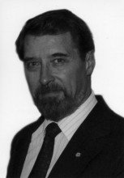

Please note: the AAS Obituaries are temporarily being hosted on this website while their full content is being ingested into the PubPub publishing platform newly adopted by the Bulletin of the American Astronomical Society. When the migration is complete, your existing links will take you to the final, migrated content. Contact peter.williams@aas.org with any questions.
Edmond M. Reeves (1934-2008)
With great sadness we report that Edmond (Ed) M. Reeves, a former leader of solar space research projects at Harvard College Observatory [HCO] and the Harvard-Smithsonian Center for Astrophysics [CfA], died on 8 August 2008, in Arlington, Virginia, after a long and heroic struggle with cancer.
Ed was born in London, Ontario, Canada, on 14 January 1934. During his undergraduate and graduate years at the University of Western Ontario [UWO], he was in the Royal Canadian Navy (Reserve) as a Cadet (1952-1956), then as Instructing Officer, HMCS Prevost (1956-1959), and Lieutenant, Royal Canadian Navy (Reserve) retired. He received a Ph.D. in 1959 from the UWO, specializing in atomic and molecular physics. After two years of postdoctoral research in ultraviolet atomic spectroscopy at the Department of Physics, Imperial College, London, England, Ed joined the HCO Solar Satellite project, working with Leo Goldberg, Director of HCO, and pioneer in solar spectroscopy.
In 1968, Ed was appointed Senior Research Associate at HCO, and in 1973 he received a joint appointment as Physicist at the Smithsonian Astrophysical Observatory [SAO] when the CfA was initiated under George Field. During his seventeen years at the Observatory, Ed led a large and vibrant group of engineers and scientists in the Solar Satellite Project, developing a series of space missions to explore the extreme ultraviolet emission from the Sun.
Ed also maintained his interest and research in laboratory atomic and molecular astrophysics and enjoyed a vigorous involvement in the HCO Shock Tube Laboratory. In the early 1960s, in the area of molecular spectroscopy, Ed and Bill Parkinson photographed the vacuum ultraviolet absorption spectrum of CO (the Fourth Positive system), which was produced at high temperature in a shock tube. This laboratory spectrum shortly led to the discovery of CO as an important source of opacity in the solar ultraviolet. Goldberg, who first identified CO vibration-rotation bands in the infrared solar spectrum in 1951, recognized at around 180 nm the prominent CO features in the shock tube spectra and in the solar spectra. The identification was confirmed by comparing the high-temperature laboratory spectra with published solar spectra taken by the Naval Research Laboratory with a rocket-borne spectrograph.
Ed's work for the Solar Satellite Project included planning and carrying out laboratory, Vacuum UV absolute-intensity calibrations of the early rocket and satellite spectrometers. He set the requirement that the solar spectroscopic instruments have radiometric calibrations in the Vacuum UV, traceable to a laboratory standard.
The space missions began with rocket experiments in the early 1960s, progressed to the Orbiting Solar Observatory [OSO] program in the mid-1960s, and culminated in the Extreme Ultraviolet Spectroheliometer on the Apollo Telescope Mount [ATM] of the Skylab missions in 1973 and 1974. Ed received NASA's Exceptional Scientific Achievement Medal in 1974. This sequence of space instruments laid much of the early groundwork for our current understanding of the outer solar atmosphere. For example, the OSO observations revealed for the first time coronal "holes," which we now know are the seat of the fast solar wind.
Another experiment of particular interest and importance to solar physics resulted from the launch of a rocket-borne objective grating spectrograph into the path of totality of a solar eclipse from Wallops Island, Virginia, on 7 March 1970. This lucky "rocket group" included Ralph Nicholls from York University, Canada; Reg Garton and Bob Speer from Imperial College, London; Bob Wilson, then from Culham in the UK; and, of course, Leo Goldberg and colleagues from HCO, a group made up of mentors, advisors, teachers, and friends of Ed's. The eclipse spectrogram revealed strong emission from neutral hydrogen (Lyman-alpha) in the solar corona. The discovery of the Lyman-alpha corona inspired the project for a Lyman-alpha coronagraph. At a Retirement Symposium dedicated to Ralph Nicholls in 1992, Ed recalled that at a coffee break about twenty years earlier, during the Skylab program at Houston, he, Bob Noyes, and Bob MacQueen outlined the need to develop a rocket-borne coronagraph to observe the hydrogen Lyman-alpha corona. Later, after returning to the CfA, Ed, Bob Noyes, and Bill Parkinson planned a rocket-borne spectrograph to image the extended corona, expecting to use a circular occulter. John Kohl joined the fledgling coronagraph project, and he realized that a linear external occulter would be better and also would match a spectrometer slit. This project became the origin of the Lyman-Alpha Coronagraph series of rocket and Spacelab experiments under John Kohl's leadership, culminating in the still-operating Ultraviolet Coronagraph Spectrometer [UVCS] experiment on the SOHO spacecraft.
In 1978, Ed joined the High Altitude Observatory in Boulder, Colorado, where he was Head of Administration and Support before moving to NASA Headquarters in 1982. There he became Director of the Flight Systems Office in the Office of Life and Microgravity Sciences and Applications, with responsibility for integrated planning and science operations for research using the Spacelab, Spacehab, and Mir missions. He led the activities for the research requirements and planning for the International Space Station and served as the Space Station Senior Scientist, the Executive Secretary of the Space Station Utilization Advisory Subcommittee, and the Executive Secretary of the Space Station Utilization Board at NASA Headquarters He also served as NASA's representative to the international Users Operations Panel, which coordinates the utilization planning for the Station across the international partners. Ed retired from NASA in 1998.
Ed was an outdoors man who enjoyed camping, canoeing, and cross-country skiing with his family. He is survived by his wife Vivian, son Dr. Geoffrey Reeves, daughter Laurie Webster, and three grandchildren. Ed's son Geoff is Group Leader for Space Science and Atmospheric Science at Los Alamos National Laboratory, Los Alamos, New Mexico. A funeral service took place on Friday, 15 August at The Falls Church, Falls Church, Virginia.
Obituary written by: Robert Noyes (Harvard- Smithsonian Center for Astrophysics), William Parkinson (Harvard- Smithsonian Center for Astrophysics)
BAAS Citation: BAAS, 2009, 41, 576
SAO/NASA ADS Bibcode: 2009BAAS...41..576N